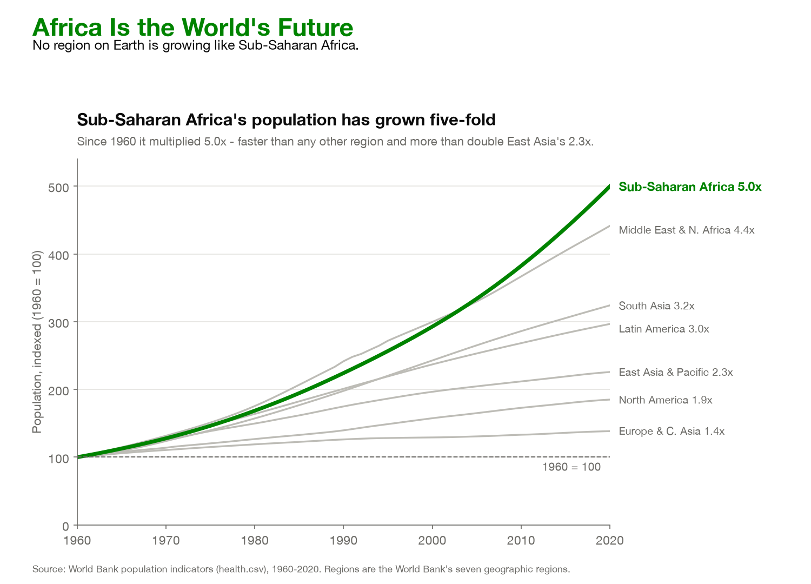
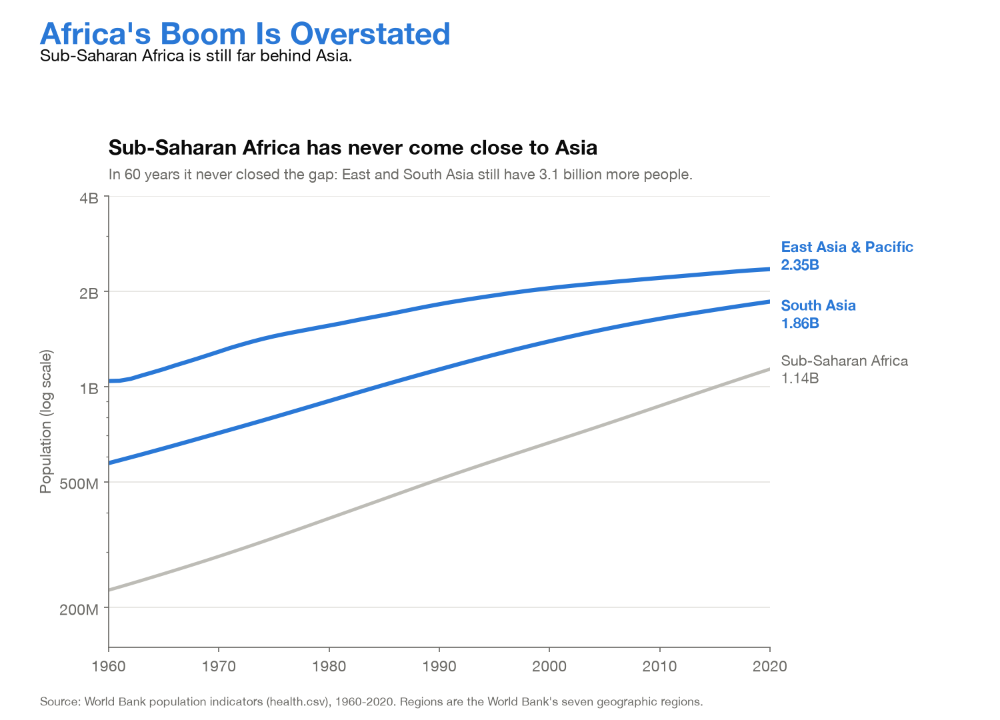

Proposition: Africa is the future of the world's population.
Both visualizations use the World Bank population indicators (1960–2020) from the Human Development Indicators dataset, and measure "Africa" with the World Bank's Sub-Saharan Africa region, one of its seven geographic regions (North Africa is grouped with the Middle East). Scores below run from −2 fully deceptive to +2 fully earnest.
FOR the Proposition

Design Decisions and Rationale:
- −1 Indexing every region to 1960 = 100 (calculated field). Dividing each region's population by its own 1960 value turns the chart into a race of growth multipliers, which Sub-Saharan Africa wins (5.0x). It also erases the fact that the region started small: 227 million people in 1960 against 1.04 billion in East Asia, and in 2020 it is still only the third-largest region (1.14 billion vs. 2.35 billion and 1.86 billion). The alternatives were raw population, where Sub-Saharan Africa sits third and looks far less like "the future," and share of world population (7.5% to 14.7%), which is honest but less dramatic. Indexing was the most persuasive. We did not score it lower because the y-axis label and the dashed "1960 = 100" baseline state the transformation openly.
- −0.5 Comparing regions and choosing 2020 as the endpoint. Using the seven World Bank regions keeps the chart clean, but it hides that dozens of individual countries grew faster than 5x, especially Gulf states such as the United Arab Emirates (107x) and Qatar (61x). The endpoint also matters: Middle East & North Africa grew faster than Sub-Saharan Africa for most of the period and was only overtaken in 2004, so "faster than any other region" is true of 2020 but not of the whole series. A careful reader can see the gray line above the green one before 2004, which is why we kept this mildly deceptive rather than strongly so.
- +0.5 Green, heavy line for Sub-Saharan Africa and gray for everyone else. Highlighting one series and graying out the context is a standard, earnest focus-and-context technique, and it makes the chart readable at a glance. The choice of green adds an emotional slant, because green reads as healthy growth rather than, say, strain on resources. A neutral accent color was an option, but green reinforced the optimistic "future" framing of the headline.
- −1 Headline and subtitle framing. The headline "Africa Is the World's Future" makes a forward-looking claim that a chart of past growth multipliers cannot prove, and it says "Africa" while the data only covers Sub-Saharan Africa. The subtitle compares Sub-Saharan Africa to East Asia ("more than double East Asia's 2.3x") instead of to the runner-up, Middle East & North Africa at 4.4x, which would have made the lead look small. Every number in the text is accurate, so the slant comes from what we chose to compare, not from false statements.
- +2 Linear y-axis from zero, full 1960–2020 range, direct labels and a cited source. The axis starts at 0, every region is shown, each line is labeled with its exact multiplier, and the World Bank source is credited. These earnest choices build trust, and that trust makes readers less likely to question the indexing. Starting the axis at 100 would have exaggerated the curves further, but a cropped axis is one of the first things skeptical readers check, so a zero baseline was the safer persuasive choice.
AGAINST the Proposition

Design Decisions and Rationale:
- −1 Logarithmic y-axis for absolute population. On a log scale, equal growth rates look parallel, so Sub-Saharan Africa's five-fold rise looks no steeper than Asia's and the region stays visually beneath both lines for all 60 years. The axis is labeled "log scale," so the choice is disclosed, but most general readers read log axes as if they were linear. In hindsight this partly backfired: because the ratio between the regions shrinks (South Asia was 2.5x larger in 1960 and 1.6x in 2020), the gray line visibly converges toward the blue ones, which undercuts the title. A linear scale would have been both more earnest and more persuasive, because the absolute gap to South Asia actually doubled, from 346 million to 721 million.
- −1.5 Choosing comparison regions and adding them together (calculated field). We compared Sub-Saharan Africa only with the two largest regions, so it is always last; against Europe, Latin America or North America it would have looked large. The subtitle then sums East Asia and South Asia to claim "3.1 billion more people," but no single region is 3.1 billion larger, so combining them inflates the gap. We kept the individual 2020 values next to each line, which makes the sum checkable but also makes the trick detectable on a second look.
- −0.5 Bold blue for Asia, thin gray for Sub-Saharan Africa. This reverses the FOR chart's emphasis: the comparison regions are the visual focus and the subject of the proposition recedes into the background. Highlighting is a normal focus-and-context technique, and blue is a calm, neutral color, so the slant is mild. It does, however, steer the reader to read the chart as "Asia's story" rather than noticing that the gray line is the steepest one.
- −1 Headline and subtitle wording. "Africa's Boom Is Overstated" and "has never come close to Asia" frame the region as falling short, and the headline says "Africa" while the data covers only Sub-Saharan Africa. "Never closed the gap" is true in absolute terms but false in relative terms, and the log scale shows relative terms. The wording also leaves out that Sub-Saharan Africa added 29 million people in 2020, more than South Asia (21 million) or East Asia & Pacific (11 million). We avoided stronger language such as "myth" so the slant would read as a measured conclusion.
- +1.5 Full 1960–2020 range, exact end labels and a cited source. We showed the whole series rather than a flattering window, labeled each line with its exact 2020 population, disclosed the log scale on the axis, and cited the World Bank. These choices are earnest, and they also make the chart look trustworthy, which makes readers less likely to question the scale and the choice of comparison regions.
Final Reflection
The most straightforward part was finding evidence for each side: the same World Bank population table supported both stories without any invented numbers. Sub-Saharan Africa really did grow five-fold, and it really is still smaller than both East Asia and South Asia. The difficult part was making the persuasive choices look natural. Each technique had an earnest twin we could hide behind: indexing is a standard way to compare growth, log scales are the textbook choice for exponential data, and comparing against the largest regions sounds like a fair benchmark. Calibrating how far to push was hard: summing two regions into one "3.1 billion" gap can be caught on a second look, while the log scale on the AGAINST side turned out too subtle and partly worked against our own title.
What surprised us most was how little the deception depended on false statements. Every number in both charts is correct, every axis is labeled, and the source is cited, yet the two pages lead readers to opposite conclusions. The persuasion came from decisions that are invisible in the final image: which comparison to make (multipliers vs. absolute size), which scale to use, which regions to include, and which word to use in the title. We were also surprised that the honest framing was sometimes the more persuasive one; a linear scale showing the widening absolute gap would have argued AGAINST the proposition better than our log scale did.
We now define ethical analysis and visualization as design that lets a reasonable reader reach the conclusion the full data supports, not just the conclusion the shown data supports. Under that definition, we draw three bounds. First, every number and axis must be accurate and labeled; this is necessary but clearly not sufficient, since all of our charts pass it. Second, the transformation must match the question being asked: indexing honestly answers "which region grew fastest," but not "which region matters most," which is how our FOR headline uses it. Third, filtering or framing is misleading when the omitted context would change the reader's conclusion, as Sub-Saharan Africa's small absolute size would for our FOR chart, or the region's 29 million new people a year would for our AGAINST chart. Choices like color, emphasis and a pointed title are acceptable persuasion as long as they direct attention to something true without hiding information that contradicts it. The line is not always sharp, which is why we think the most important ethical habit is disclosure: stating the transformation, window and scale where the reader can see them.